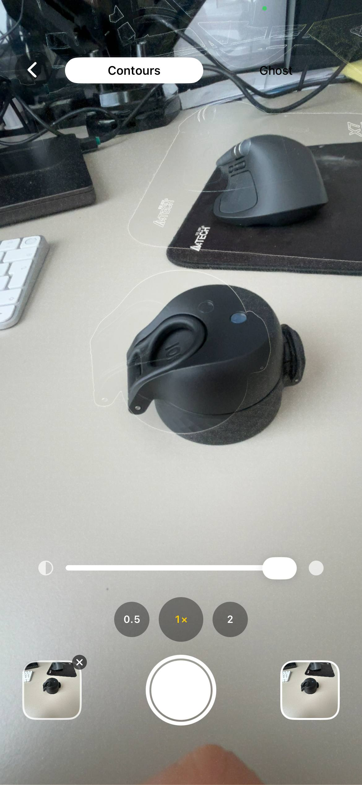

Last updated: 12 June 2026
Plant growth timelapse — handheld weekly photos
Plant timelapses are usually made with a phone or camera bolted to a tripod for weeks. That works, but you lose the phone for the duration and the rig has to live in a window where light, kids, pets and the cat all make peace with it.
There's a slower version that produces almost the same result without dedicating any hardware: take one photo a week, from the same spot, with the framing locked. Over three months that's about 12 photos.
Stitched into a GIF or video, those photos show a monstera leaf unfurling, a tomato fruiting or a tree adding growth rings. You also keep the phone for everything else while collecting the shots.
What this works for
- A single houseplant — monstera, pothos, snake plant, philodendron, fiddle leaf — over months.
- A vegetable garden plant — tomato, pepper, cucumber, basil — over a season.
- An outdoor tree, shrub or hedge over a year.
- A whole pot or planter as it fills in.
- A specific new leaf unfurling on a tropical (daily for two weeks).
It does not replace a real timelapse camera if you want second-by-second leaf movement. It does replace one if you want to show change at the scale of days and weeks.
The setup
- Pick the angle. The angle that shows what you want the timelapse to be about. New leaves? Above the crown. Plant getting bigger? Side-on, at a distance that fits the final expected size. Tomato fruit? A 45° front angle.
- Pick the time of day. Plants move. Leaves rotate towards light through the day. Pick a single time — early morning is easiest, before sun direction shifts everything — and use that time every week.
- Pick the spot. Stand 1–2 metres from a medium houseplant (adjust to keep the whole plant in frame); mark a 2p-coin-sized spot on the floor with painter's tape and note the phone height (e.g. chest height = ~1.3 m). Record distance and height in a short note in your album so you can repeat it.
- Pick the lighting. Either consistent indoor light (a grow lamp on, blinds in the same position, overhead light on) or consistent daylight at the chosen time. If you can't control daylight, shoot on an overcast morning where window light is even.
- Pick the background. Move the plant to a neutral background for the photo if needed, or accept the existing one but commit to keeping it the same. A dark wall makes new green leaves pop.
The weekly shot
One photo, same angle, same time, same light. Done in 30 seconds.
Practical note: I once used an overhead bathroom light that changed colour temperature between weeks — the first three photos looked different. Now I always pick a window time or switch the same warm LED on. — Oleksandr Prudnikov
The hard part is matching the framing exactly.
A tripod does not help when the plant grows out of frame and you need to re-aim; it also requires leaving hardware in place. See my notes on taking consistent progress shots.
I built Contour to solve that framing problem. Load last week's photo; the app traces the main outlines — pot edge, leaf shape, background features — and overlays them on the live camera. Adjust position until the outlines match, then take the shot. The result is a new photo framed to the same reference even if the leaves have shifted.

When the plant grows out of the frame, re-aim deliberately in two steps: first take a new "wide" reference photo that shows the plant plus extra space, then keep the previous reference photo in the album so earlier frames remain consistent while future shots align to the new wide reference. See the rephotography technique for step-by-step guidance. The break in the timeline is intentional rather than accidental.
How many photos for a watchable timelapse
- 10–15 photos at 0.3 seconds each: a 3–5 second clip. Good for social.
- 30 photos at 0.2 seconds each: a 6-second clip. Comfortable rhythm.
- 50+ photos: smooth, but slow to accumulate. A whole growing season.
Don't overthink the frame rate. Most plant timelapses look best at about 5 frames per second. Slower if you want to study individual leaves; faster if you want a clean rhythm. For more on consistent progress shots see the guide on taking consistent progress photos.
By plant type
Monstera and tropicals
The hero shot is a new leaf unfurling. That happens fast — over 5 to 10 days. Switch to daily photos when you see the leaf push out of the cataphyll. Side angle, against a contrasting background. Twelve daily photos at 0.4 seconds each is a satisfying 5-second clip.
Tomato and pepper plants
Weekly photos over a season. Side angle, the whole plant in frame. Switch to a closer shot of a single truss or fruit cluster once flowering starts. Add 24-hour ripening daily shots on tomatoes that have just started turning colour.
Tree growth over a year
Same spot, same season-spread. Spring leaves out, summer dense, autumn colour change, winter bare. Four photos minimum, monthly is better. Twelve photos = a 12-month video.
A whole pot filling in
A fresh planter with seedlings to mature plants over two months. Top-down or wide side angle. Weekly photos. The mid-stage where the bare soil disappears under leaves is the visual payoff.
Stitching the timelapse
Once you have 10+ aligned photos, you put them in order and play them back fast. Contour can export the album as a GIF or video: pick the aligned shots, set the frame speed and save. You don't need video editing software for this.
If you want music, an MP4 export, or transitions, drop the saved photos into iMovie, CapCut or Final Cut — same input, more options. For longer-term projects see the guide on construction timelapse on iPhone.
Practical tips
- Lock exposure and focus. Long-press on the iPhone viewfinder to set AE/AF Lock so focus and exposure don't shift between shots.
- Adjust exposure if needed. Use manual exposure compensation when the background brightens or darkens so the plant stays consistently exposed.
- Name and note files. Name photos like "Monstera-week-01" or add distance/height notes in the album so you can repeat the setup precisely.
- Backup regularly. Keep the album in iCloud or export monthly to a folder; loss of a single week's photo breaks the rhythm.
Common mistakes
Founder note: when I first tested weekly shots my mark on the floor rubbed off; I now use a small piece of painter's tape and a coin as a footprint — cheap and repeatable. — Oleksandr Prudnikov
- Different time of day. Plants visibly rotate towards the light over the day. Morning shots vs evening shots make the leaves look like they're flickering, not growing.
- Photographing wet. Just after watering, leaves are shinier and droopier from the weight. Pick a state — always before watering, or always 24 hours after — and stick to it.
- Moving the pot between shots. Plants rotate. You moved it once during a watering and now the front-facing leaves are the back-facing leaves. Mark the pot orientation with a sticker on the rim.
- Cropping after the fact. If you have to crop to "fix" the framing, the result is lower resolution and the alignment isn't great anyway. Get the framing right at capture.
Frequently asked questions
What's the easiest way to make a plant growth timelapse?
Take one photo a week from the same spot, with the same framing, and stitch the photos into a GIF or video. Contour overlays last week's photo on the camera so the framing locks in. Download on the App Store →
Do I need a dedicated camera for plant timelapse?
Only if you want second-by-second motion. For day-to-week growth, a phone and a weekly photo is enough.
How long does it take to grow a monstera leaf?
From cataphyll to unfurled leaf is usually 5 to 14 days depending on the plant's health, light and temperature. Daily photos cover it nicely.
What's the best angle for plant photos?
Side-on for plant size, top-down for leaf count, 45° for fruit. Pick one per timelapse and don't switch — if you want two angles, run two parallel series.
How do I keep the camera in the same spot for months?
Either dedicate a tripod, or take a photo with an overlay tool that matches the new frame to the previous one without permanent hardware. Contour does the second.
How to shoot a monstera growth time lapse on an iPhone?
Use daily photos while a leaf unfurls (5–14 days). Use a side angle, contrasting background, and Contour to overlay the previous frame so you can match the leaf's position each day.
How do I keep an indoor plant journal with weekly photos?
Create an album named with the plant and start date, note distance and time of day in the description, use a consistent mark on the floor and label each photo "week 1", "week 2", etc. Export a timelapse GIF when you have 10+ aligned shots.
Make a plant timelapse without a permanent rig
Open Contour, load last week's photo and align the outline on the live camera. Capture a matched weekly shot in 30 seconds, then export a GIF when you have 10+ aligned images. Free, iPhone only, nothing uploaded from your device.
Download Contour